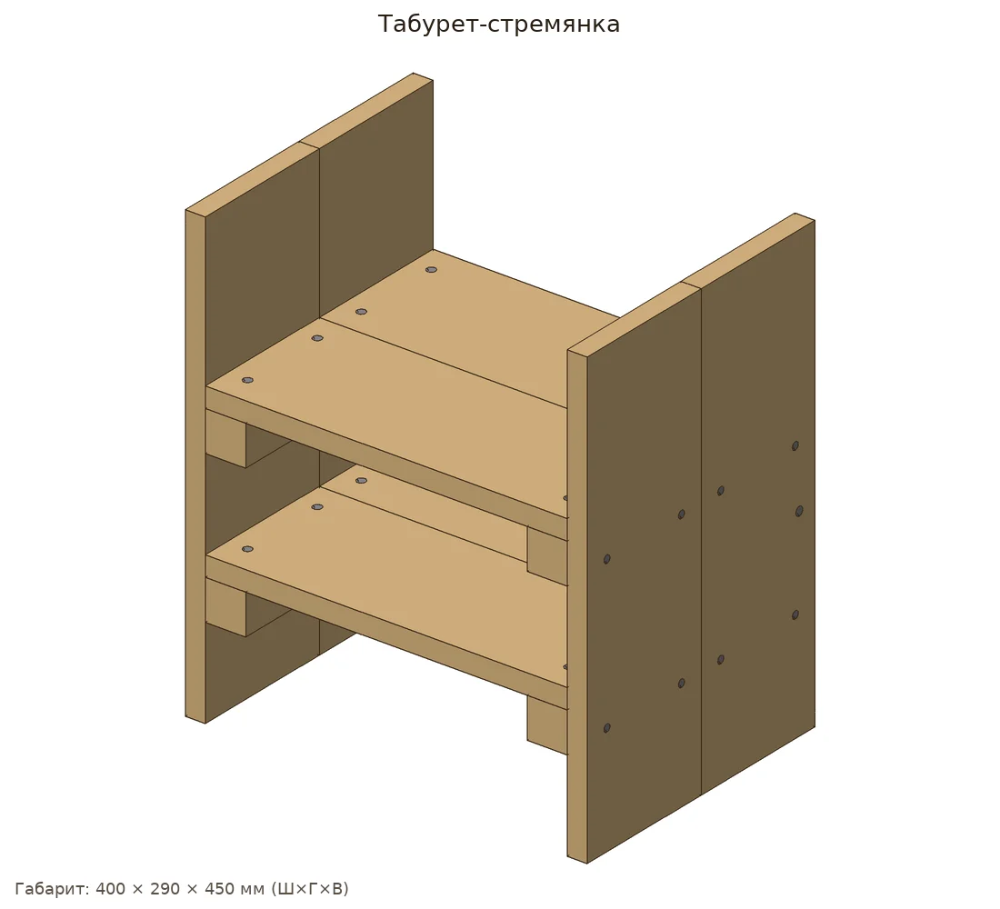
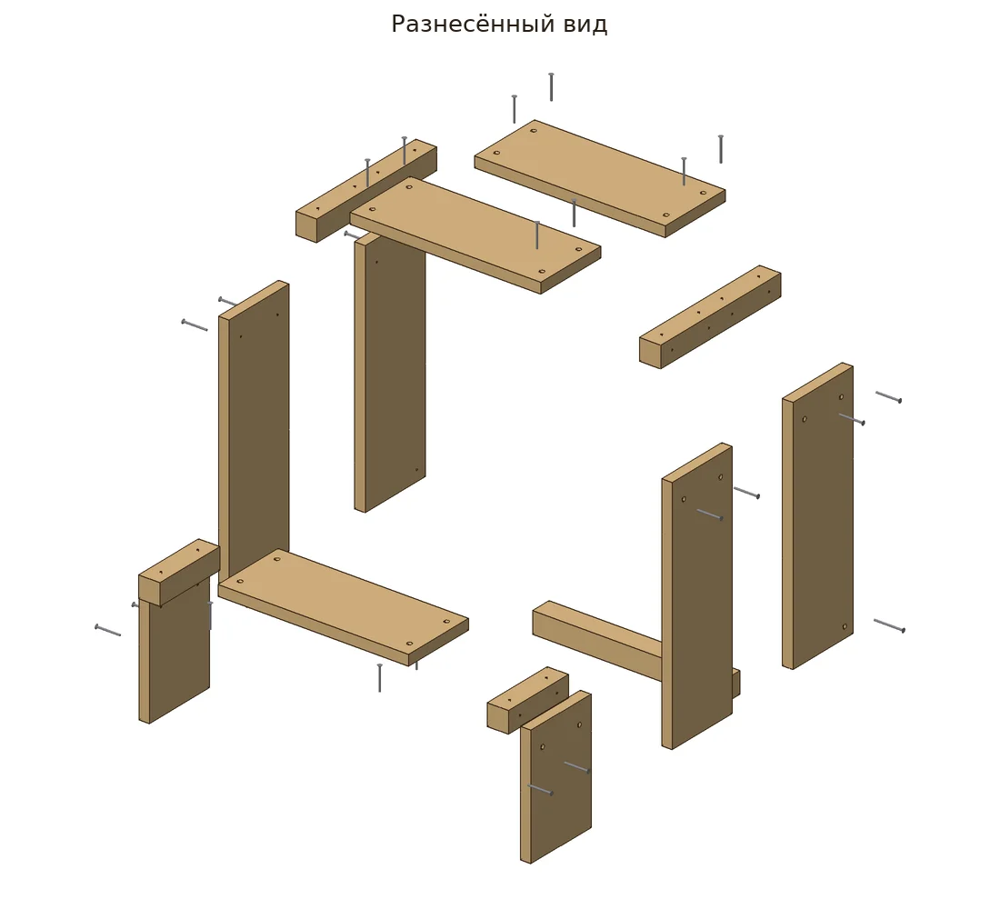
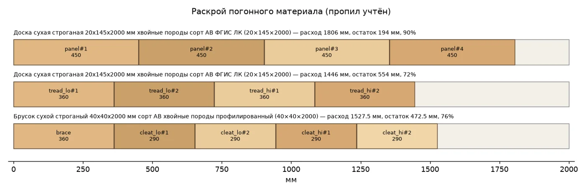
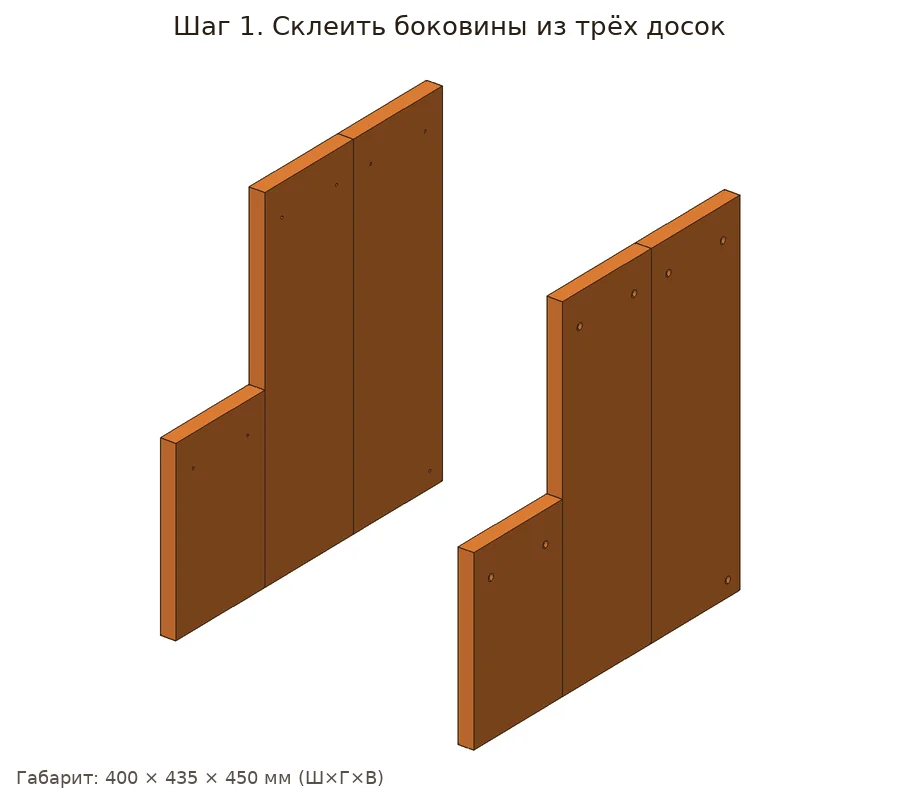
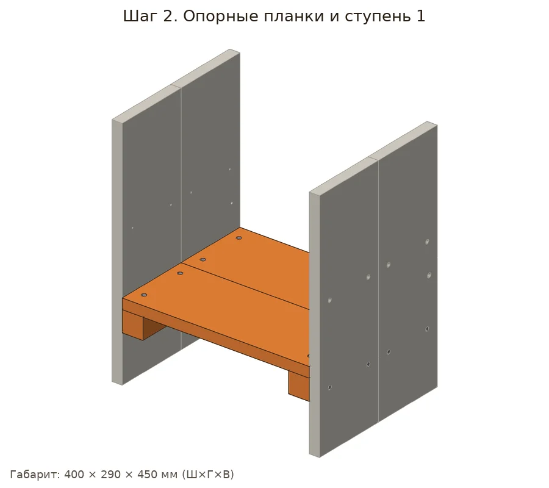
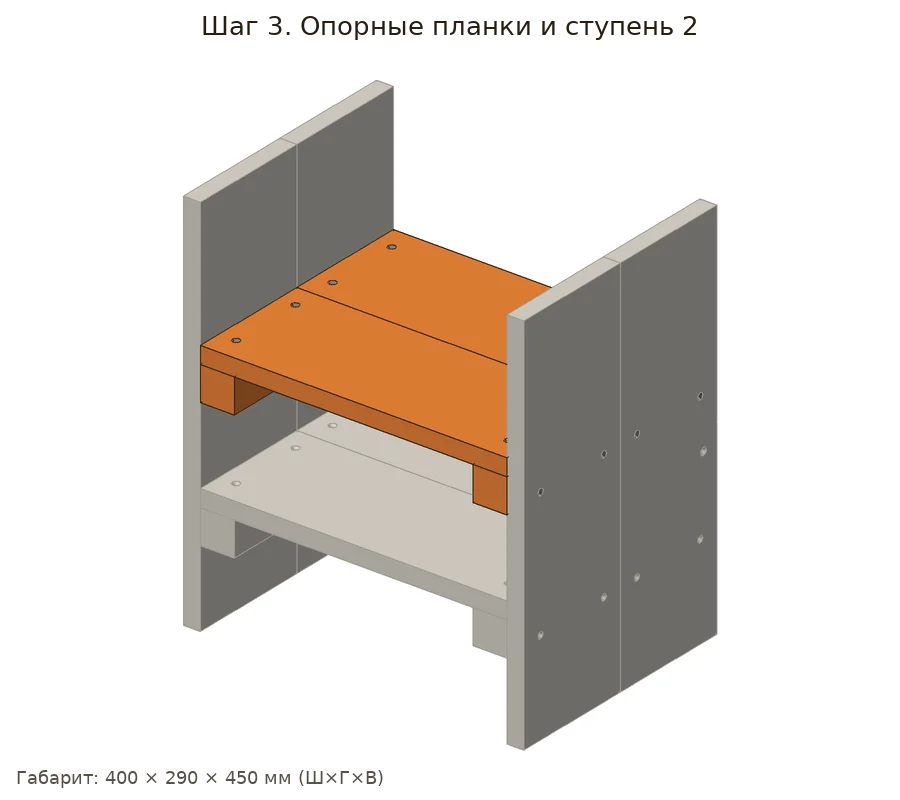
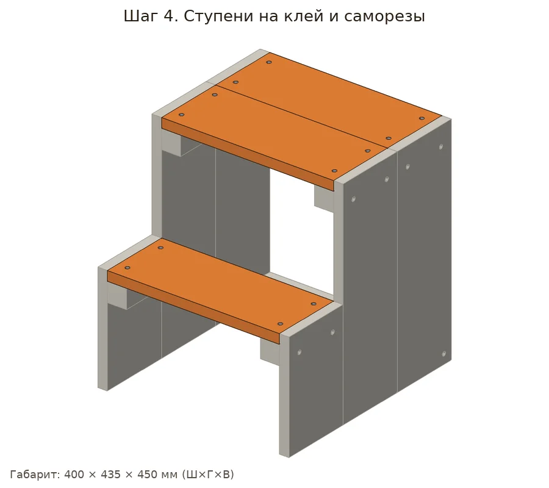

Стремянка-табурет с двумя ступенями лесенкой: боковины склеены из досок, ступени лежат на опорных брусках, сзади распорка.
| Позиция | Зачем | Кол-во | Цена | Сумма |
|---|---|---|---|---|
| материал | ||||
| Доска 20×145×2000 Доска сухая строганая 20х145х2000 мм хвойные породы сорт АВ ФГИС ЛК · арт. 102355 |
раскрой: 2 заготовки по 2000 мм | 2 шт | 341 ₽ | 682 ₽ |
| Брусок 40×40×2000 Брусок сухой строганый 40х40х2000 мм сорт АВ хвойные породы профилированный · арт. 1092607 |
раскрой: 1 заготовка по 2000 мм | 1 шт | 175 ₽ | 175 ₽ |
| крепёж | ||||
| Саморезы по дереву 50x4 Саморезы по дереву 50x4,0 мм потайная головка конструкционные (18 шт.) · арт. 160980 |
нужно 24 шт. + запас → 27; в упаковке 18; ЗАМЕНА: 4×50 вместо 4×45 (допустимо 44–57 мм) | 2 упак | 143 ₽ | 286 ₽ |
| Саморезы 90 мм Саморезы ГД 90x4,2 мм (6 шт.) · арт. 125776 |
нужно 2 шт. + запас → 4; в упаковке 6; ЗАМЕНА: 4.2×90 вместо 4×55 (допустимо 52–377 мм) | 1 упак | 30 ₽ | 30 ₽ |
| отделка | ||||
| Лак 0,9 л Лак алкидно-уретановый паркетный Престиж Wood глянцевый бесцветный 0,9 л · арт. 1098206 |
нужно ≈0.273 л | 1 шт | 270 ₽ | 270 ₽ |
| расходник | ||||
| Шкурка P120 Наждачная бумага Flexione 230х280 мм Р120 влагостойкая · арт. 691898 |
≈3.9 листа | 4 шт | 42 ₽ | 168 ₽ |
| Клей ПВА Клей ПВА Момент Столяр Экспресс D2 125 г · арт. 675688 |
нужно ≈18 г | 1 шт | 238 ₽ | 238 ₽ |
| оснастка | ||||
| Бита PH2 Бита Hesler PH2 магнитная 25 мм (882083) · арт. 882083 |
саморезы | 1 шт | 33 ₽ | 33 ₽ |
| Сверло по дереву спиральное Vi Сверло по дереву спиральное Vira 3х60 мм с зенкером (552053) · арт. 684796 |
утопить головки | 1 шт | 176 ₽ | 176 ₽ |
| Ножовка по дереву Ножовка по дереву 400 мм 9 зуб/дюйм средний зуб · арт. 681543 |
раскрой | 1 шт | 226 ₽ | 226 ₽ |
| Стусло Стусло Сибртех пластиковое 300х65 мм (22571) · арт. 968520 |
ровные торцы 90°/45° | 1 шт | 143 ₽ | 143 ₽ |
| Струбцина столярная Sparta G-т Струбцина столярная Sparta G-тип 75х55 мм (206535) · арт. 687434 |
склейка | 1 шт | 265 ₽ | 265 ₽ |
| Рулетка Рулетка с фиксатором 3 м x 16 мм · арт. 159373 |
разметка | 1 шт | 99 ₽ | 99 ₽ |
| Карандаш Карандаш строительный малярный Hesler (2 шт.) · арт. 125418 |
разметка | 1 упак | 30 ₽ | 30 ₽ |
| Итого, включая оснастку 972 ₽ | 2821 ₽ | |||
Источник идеи: https://alfales.ru/stati/kak-sdelat-taburet-stremyanku-iz-dereva/. Проект переработан под шуруповёрт 12 В и ручной инструмент.
Параметрическая 3D-модель с настоящими отверстиями, крепёж расставлен по правилам (Eurocode 5, упрощённо для DIY), раскрой с учётом пропила, закупка упаковками. Габарит модели 400×435×450 мм, масса ≈5.81 кг. Прочность не рассчитывалась.







Проверка пройдена: ошибок и предупреждений нет.
| Соединение | Крепёж | Шт. | Заход | Засверловка |
|---|---|---|---|---|
| Боковина, передняя доска (225) №1 → Опорный брусок нижней ступени №1 | 4×45 | 2 | 25 мм | сверло 3 мм |
| Боковина, передняя доска (225) №2 → Опорный брусок нижней ступени №2 | 4×45 | 2 | 25 мм | сверло 3 мм |
| Боковина, средняя доска (450) №1 → Опорный брусок верхней ступени №1 | 4×45 | 2 | 25 мм | сверло 3 мм |
| Боковина, задняя доска (450) №1 → Опорный брусок верхней ступени №1 | 4×45 | 2 | 25 мм | сверло 3 мм |
| Боковина, средняя доска (450) №2 → Опорный брусок верхней ступени №2 | 4×45 | 2 | 25 мм | сверло 3 мм |
| Боковина, задняя доска (450) №2 → Опорный брусок верхней ступени №2 | 4×45 | 2 | 25 мм | сверло 3 мм |
| Нижняя ступень → Опорный брусок нижней ступени №1 | 4×45 | 2 | 25 мм | сверло 3 мм |
| Нижняя ступень → Опорный брусок нижней ступени №2 | 4×45 | 2 | 25 мм | сверло 3 мм |
| Верхняя ступень-сиденье №1 → Опорный брусок верхней ступени №1 | 4×45 | 2 | 25 мм | сверло 3 мм |
| Верхняя ступень-сиденье №1 → Опорный брусок верхней ступени №2 | 4×45 | 2 | 25 мм | сверло 3 мм |
| Верхняя ступень-сиденье №2 → Опорный брусок верхней ступени №1 | 4×45 | 2 | 25 мм | сверло 3 мм |
| Верхняя ступень-сиденье №2 → Опорный брусок верхней ступени №2 | 4×45 | 2 | 25 мм | сверло 3 мм |
| Боковина, задняя доска (450) №1 → Задняя распорка | 4×55 | 1 | 35 мм | сверло 3 мм |
| Боковина, задняя доска (450) №2 → Задняя распорка | 4×55 | 1 | 35 мм | сверло 3 мм |
Доска 20×145: 3343.5 мм
Брусок 40×40: 1237.5 мм
Саморез 4×45: 24 шт
Саморез 4×55: 2 шт
Шкурка P120: ≈3.9 лист
Лак: ≈0.27 л
Клей ПВА: ≈0.02 кг
Смета «Что купить в Петровиче» выше посчитана этой же моделью: упаковки, замены и оснастка.